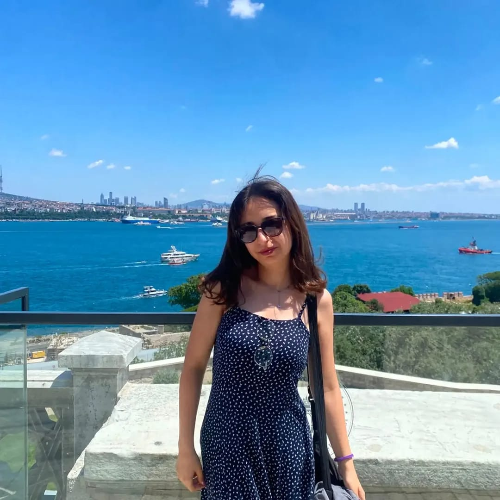
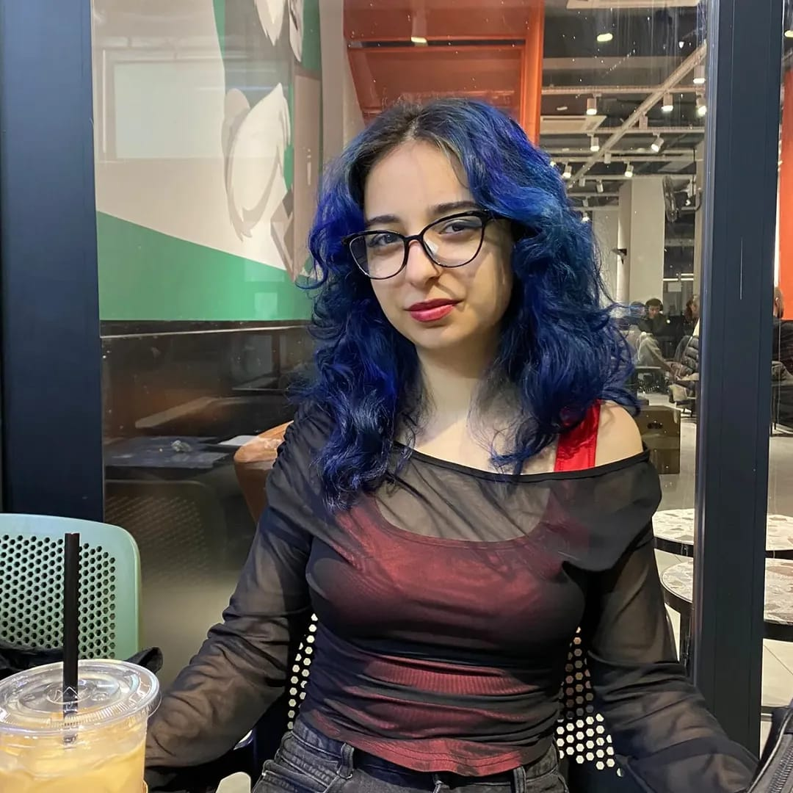

Merhaba, ben Asu.
Ben Asu. Tarih okuyor, müzelerin sessiz koridorlarında geçmişin izlerini sürüyor ve geleceğin tarih öğretmeni olmak için hazırlanıyorum.
Hakkımda
Tarih sadece kitaplarda yazan satırlardan ibaret değildir. Benim için tarih; dokunabildiğimiz eserlerde, müzelerde sergilenen nesnelerin hikayelerinde ve bazen de içtiğimiz bir bardak çayın yolculuğunda gizlidir.
Bir gün kendi öğrencilerime bu tutkuyu aşılayacak bir tarih öğretmeni olma hayaliyle okuyorum. Aynı zamanda geçmişle bugün arasındaki o ince köprüyü kurmak için müzelerde çalışmaya da büyük bir ilgi duyuyorum.

